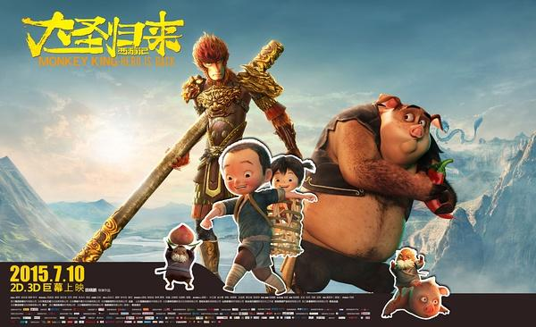

《西游记之大圣归来》是根据中国传统神话故事《西游记》进行拓展和演绎的3D动画电影，由横店影视、天空之城、燕城十月与微影时代联合高路动画、恭梓兄弟、世纪长龙、山东影视、东台龙行盛世、淮安西游产业与永康壹禾共同出品，田晓鹏执导，张磊、林子杰、刘九容和童自荣等联袂配音。 影片讲述了已于五行山下寂寞沉潜五百年的孙悟空被儿时的唐僧——俗名江流儿的小和尚误打误撞地解除封印后，在相互陪伴的冒险之旅中找回初心，完成自我救赎的故事。 影片于2015年7月10日以2D、3D和中国巨幕的形式在国内公映后，即以优秀的口碑引发网友观众的追捧和媒体的广泛报道。《人民日报》认为该片是中国动画电影十年来少有的现象级作品? 。
2015年，该片获得年第30届中国电影金鸡奖最佳美术片奖和第16届中国电影华表奖优秀故事片奖。2016年8月6日，在第20届华鼎奖组委会公布的50强电影名单中，该片排名第16位 。
大闹天宫后四百年多年，齐天大圣成了一个传说，在山妖横行的长安城，孤儿江流儿与行脚僧法明相依为命，小小少年常常神往大闹天宫的孙悟空。
有一天，山妖来劫掠童男童女，江流儿救了一个小女孩，惹得山妖追杀，他一路逃跑，跑进了五行山，盲打误撞地解除了孙悟空的封印。悟空自由之后只想回花果山，却无奈腕上封印未解，又欠江流儿人情，勉强地护送他回长安城。一路上八戒和白龙马也因缘际化地现身，但或落魄或魔性大发，英雄不再。妖王为抢女童，布下夜店迷局，却发现悟空法力尽失，轻而易举地抓走了女童。悟空不愿再去救女童，江流儿决定自己去救。日全食之日，在悬空寺，妖王准备将童男童女投入丹炉中，江流儿却冲进了道场，最后一战开始了。
曾经大闹天宫，被如来佛压在五行山下五百多年，偶然因江流儿（小唐僧）解开镇压之印，逃出山洞，但是法力尽失，性格狂躁抑郁，看淡功与名，只想回花果山过平凡日子，又因恻隐之心，勉强护送江流儿回长安，一路上不得不与山妖肉搏厮杀，狼狈不堪。后来悟空挣脱法印，唤醒金箍棒，痛扁众妖，大圣归来。
江流儿是年仅7岁的小和尚，父母被山妖害死，成了孤儿。之后被云游僧法明抚养，在长安城长大。江流儿勇敢善良、天真活泼、好奇大度，崇拜大闹天宫的齐天大圣。在他心里孙悟空就像隐形的父亲，直到有一天，他无意间将偶像放出了五行山，却发现大圣已然落魄，法力尽失，只想回那可能再也回不去了的花果山……
最终，是这个唠叨的熊孩子激起了大圣的热血，让他在拯救别人的同时成就了自己。
大闹天宫时被孙悟空打下天宫，错投猪胎，常借自己的36般小变化，装神弄佛，骗吃骗喝，爱显摆，富有同情心。遇到孙悟空和江流儿后，跟随二人一起护送江流儿。
五行山中大妖王，化身为书生面相的道人，以吃童男童女维持妖身妖术，狡猾狠毒，原形是山海经中的混沌巨兽，大嘴可以吞噬世间一切。
《江流儿的师傅。江边捡到小婴儿，故取名江流儿，收做徒弟带在身边。
《西游记》是中国神话的巅峰之作，原著中有很多迷一样的环节，引起了国人一次又一次的解读浪潮，如1964年上海美术电影制片厂制作的《大闹天宫》、1995年《大话西游》，2000年网络文学《悟空传》，都令人耳目一新。但在3D动画电影领域中，鲜有西游记题材出现，于是制作方经过8年的酝酿和3年的制作，3D动画电影《西游记之大圣归来》诞生。 影片的世界观是架构在《西游记》小说原著的基础之上，根据中国传统神话故事，进行了新的拓展和演绎。西游世界有天庭、人世和地府。来自天庭界的使命是让唐僧去西天取回真经，以造福妖怪横生的人世。悟空、八戒，都是非同凡人的妖，但他们与其它妖怪不同，他们曾经进入过天庭的神仙序列，但因违反天庭规矩，先后被贬落到人世间。因为同一个使命，他们跟唐僧的成长缠绕在一起，从互相陌生、彼此隔膜、相互逃避、甚至一朝为敌。直到唐僧的第十世，各自才心坚意诚地愿意保护唐僧去西天。唐僧在成为知名僧人之前，经历过不同的身世或身份。每经历一死，他就忘掉一切，转世在新的时空里，以凡人之躯和超凡大爱开始又一次的人间之旅。 影片将故事设定在唐僧十世轮回的第一世。一无所长的唐僧只有8岁，而无所不能的悟空却带着五行山下的符咒；命运让他们在弱爆的情况下相遇，面对的挑战却是群妖围捕。
导演田晓鹏在影片音乐创作上希望可以用声音重现童年看《大闹天宫》时候的那种激动，于是找黄英华谈音乐创作。之所以选择黄英华，是因为黄英华给周星驰做的电影音乐，尤其是人物出场时，让田晓鹏直觉那就是他想要的孙悟空出场方式。在音乐创作上，黄英华根据影片中各角色塑造出的性格进行创作： 因为孙悟空经历大闹天宫又被压在五行山下五百年，从昔日战神失去法力，冷漠狂躁但难以割舍侠义情怀，到后来在一点一滴中被江流儿打动，慢慢地成为一个温暖的父亲形象，最终回归成为真正的大英雄，所以黄英华在孙悟空出场的音乐参考了西部片孤胆牛仔出场，又酷又神秘，还带着口哨儿声；此外还设计了一段男低音的吟唱，想要放大他内心的孤独和沧桑，到后期声音会越来越温暖，感情也越来越饱满。 江流儿出场的音乐黄英华用了单簧管、双簧管，因为这些明亮的声音特别童真；“土地公公”出场用了些高音的笛子，感觉很调皮。 猪八戒因为他内心觉得自己还是天蓬元帅，但样子却是一头肥猪，所以黄英华用了一些男低音的即兴咏叹调，表达他的滑稽和无奈；在表现大妖王混沌的时候，黄英华给他的唱段中加了一点儿日本“能剧”的元素，听起来有点儿阴森、诡异。最后表现山妖出场时，本来是运用了一些中国鼓，后来都换成了日本的“太鼓”，因为考虑到太鼓本来就是用在驱鬼仪式中的。[9]